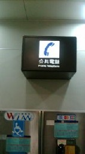

一つの漢字は いろんな意味で用いられる。そん中で 「公」という字は、だいたい２、３種類の意味で用いられるようだ。たとえば公衆電話、公衆トイレ、公園と云えば、大衆とか民衆、民間、民用というような意味。しかし公立とか公式行事と云えば、県とか市とか 地方の行政府の意味。そこで“公用車”といえば、役所が購入した車。公共工事と云えば、国をも含めた行政組織が行う工事、公安などと云えば、国家が関係している匂いがプンプン....
いずれにしても日本で公用○○といえば、行政組織が関係しているイメージが強い。しかし中国では行政組織というより、大衆／民間というような意味が強いようだ。そこで台湾では、公衆電話は公用電話という。
40年ほど前、初めて台湾へ行ったとき、某鉄道の駅にある電話が「公用電話」と表示してあった。なにせ初めての台湾だったし、当時は夜には戒厳令がしかれていた時代。それで「え～、役所専用の電話なのか？ それにしても、どうしてこんなところに....」と不思議に思った。
そんな疑問を持つ日本人観光客が多かったせいかどうか知らないが、最近出かけたら、“公共電話”という表示になっていた(^-^；

|